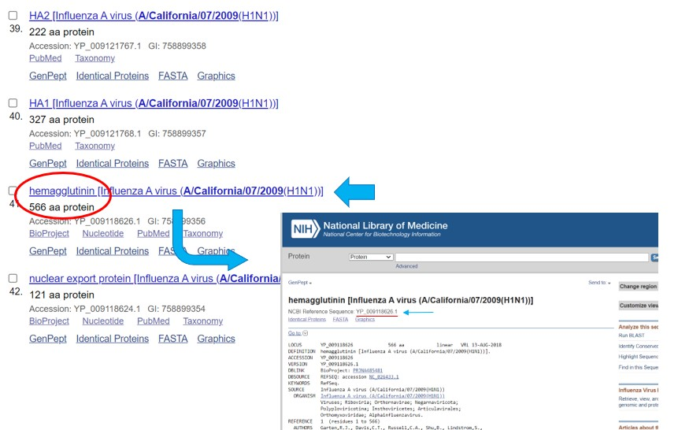
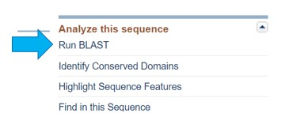

Pasos
-
Elegir una temporada de Influenza
De la tabla 1, elegir una de las temporadas disponibles. Si se desea una temporada más actualizada haga clic aquí y elija una.

-
Conseguir información sobre la proteína viral
Ingresar la notación de la cepa en NCBI GenBank y elegir la opción protein en el cuadro superior izquierdo. Luego, ingresar la notación de la cepa a buscar y hacer clic en search
Buscar en el listado la información respecto a la Hemaglutitina ("hemagglutinin")
i. Por ejemplo, para la cepa A / California / 07/2009, el resultado deseado aparece como "hemaglutinina [virus de la Influenza A (A / California / 07/2009 (H1N1))]]" y en la línea siguiente dice "566 aa protein ", lo que significa que esta proteína contiene 566 aminoácidos.
No seleccionen un resultado que diga "parcial" en su título, ya que esta no es la proteína completa.
ii. Si no hay datos sobre la proteína hemaglutinina para esta cepa (la proteína no figura en los resultados), omitan esta cepa. Comiencen el paso nuevamente usando una variedad común diferente de su tabla de datos.Hacer este mismo procedimiento para ambas cepas (vacuna y "salvaje")
-
Comparar secuencias proteicas
 · "Ejecutar BLAST" (columna en el lado derecho de la página web, en la parte superior).
· Seleccionar "Alinear dos o más secuencias".
· La base de datos debe configurarse automáticamente para usar el algoritmo "blastp".
· Registrar el porcentaje que es idéntico entre las dos secuencias.
-
Repetir el procedimiento anterior
· Para la proteína neuraminidasa
· Para 4 temporadas más
-
Responda
· ¿Se aprecia alguna tendencia?
· En general, ¿qué tan similares son las secuencias de proteínas de hemaglutinina y neuraminidasa en las cepas comunes de influenza al mismo tipo de virus de influenza que se usó en la vacunación para esa temporada?
· Basado en cuán similares son las secuencias, ¿qué tan bien creen que la vacuna protegió a una persona vacunada de las diferentes cepas en una temporada dada?
· ¿Qué tan bien parece que una vacuna contra la influenza de un año protegerá a una persona contra las cepas comunes de influenza uno, dos, tres o más años después?
· ¿Se aprecian otras tendencias en sus datos?
Resultados
Para realizar el procedimiento experimental se han elegido las temporadas
· octubre 2006 - mayo 2007
· octubre 2007 - mayo 2008
· octubre 2008 - mayo 2009
· octubre 2009 - mayo 2010
· octubre 2010 - mayo 2011
1. Tablas de temporadas elegidas
Temporada octubre 2006 - mayo 2007
| Tipo de Influenza | Subtipo de Influenza | Cepa de influenza Vacuna | Porcentaje de coincidencia H | Porcentaje de coincidencia N |
|---|---|---|---|---|
| A (H1N1) | A/New Caledonia/20/99 | A/New Caledonia/20/99 | 100% | 100% |
| A (H1N1) | A/Solomon Islands/3/2006 | A/New Caledonia/20/99 | Solo datos parciales Solomon | Solo datos parciales Solomon |
| A (H3N2) | A/Wisconsin/67/2005 | A/Wisconsin/67/2005 | 100% | 100% |
| B | B/Ohio/1/2005 | B/Malaysia/2506/2004 | Solo datos parciales de Ohio | 98.28% |
Temporada octubre 2007 - mayo 2008
| Tipo de Influenza | Subtipo de Influenza | Cepa de influenza Vacuna | Porcentaje de coincidencia H | Porcentaje de coincidencia N |
|---|---|---|---|---|
| A (H1N1) | A/Brisbane/59/2007 | A/Solomon Islands/3/2006 | Solo datos parciales Solomon | - |
| A (H1N1) | A/Solomon Islands/3/2006 | A/Solomon Islands/3/2006 | 100% | 100% |
| A (H3N2) | A/Wisconsin/67/2005 | A/Wisconsin/67/2005 | 100% | 100% |
| A (H3N2) | A/Brisbane/10/2007 | A/Wisconsin/67/2005 | 97.88% | 98.08% |
| B | B/Yamagata/16/88 | B/Malaysia/2506/2004 | Solo datos parciales de Yamagata | 94.64% |
| B | B/Ohio/1/2005 | B/Malaysia/2506/2004 | Solo datos parciales de Ohio | 98.28% |
| B | B/Florida/4/2006 | B/Malaysia/2506/2004 | 93.33% | 95.92% |
Temporada octubre 2008 - mayo 2009
| Tipo de Influenza | Subtipo de Influenza | Cepa de influenza Vacuna | Porcentaje de coincidencia H | Porcentaje de coincidencia N |
|---|---|---|---|---|
| A (H1N1) | A/Brisbane/59/2007 | A/Brisbane/59/2007 | 100% | 100% |
| A (H3N2) | A/Brisbane/10/2007 | A/Brisbane/10/2007 | 100% | 100% |
| B | B/Victoria/2/87 | B/Florida/4/2006 | Solo datos parciales de Victoria | Solo datos parciales de Victoria |
| B | B/Yamagata/16/88 | B/Florida/4/2006 | Solo datos parciales de Yamagata | 94.64% |
Temporada octubre 2009 - mayo 2010
| Tipo de Influenza | Subtipo de Influenza | Cepa de influenza Vacuna | Porcentaje de coincidencia H | Porcentaje de coincidencia N |
|---|---|---|---|---|
| A (H1N1) | A/Brisbane/59/2007 | A/Brisbane/59/2007 | 100% | 100% |
| A (H1N1) | A/California/07/2009 | A/Brisbane/59/2007 | 79.15% | 81.28% |
| A (H3N2) | A/Brisbane/10/2007 | A/Brisbane/10/2007 | 100% | 100% |
| B | B/Brisbane/60/2008 | B/Brisbane/60/2008 | 100% | 100% |
Temporada octubre 2010 - mayo 2011
| Tipo de Influenza | Subtipo de Influenza | Cepa de influenza Vacuna | Porcentaje de coincidencia H | Porcentaje de coincidencia N |
|---|---|---|---|---|
| A (H1N1) | A/California/07/2009 | A/California/07/2009 | 100% | 100% |
| A (H3N2) | A/Perth/16/2009 | A/Perth/16/2009 | 100% | 100% |
| B | B/Brisbane/60/2008 | B/Brisbane/60/2008 | 100% | 100% |